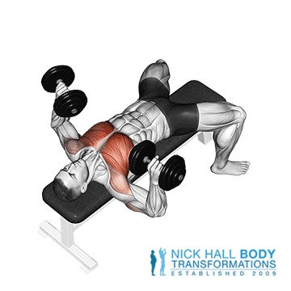

Dviganje uteži na ravni klopi s pomočjo ročk je odlična vaja za krepitev prsnih mišic, ramen in tricepsov.
Lezite na ravno klop in v vsako roko vzemite utež z ročajem, pri čemer je ročaj usmerjen naprej. Postavite stopala na tla in jih poravnajte s koleni (stopala so lahko tudi za njimi). Naredite lok v spodnjem delu hrbta in potisnite prsni koš navzgor. Dlan naj bo obrnjena naprej. Počasi spustite uteži ven in navzdol do ravni prsi, pri čemer so komolci usmerjeni pod kotom 45 stopinj.
Trajanje: minut
Kalorije: kcal
Vrsta:
Težavnost:
Kratek opis: